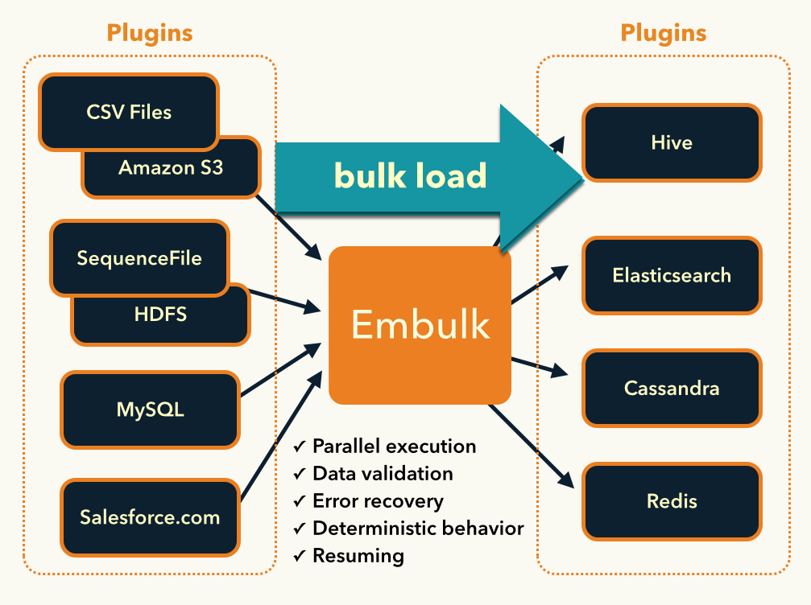

Embulk¶
Highlights¶
- Embulk’s announcement mailing list (read-only) is ready. Please feel free to subscribe! Embulk core members post important updates such as key releases, compatibility information, and feedback requests to users.
What’s Embulk?¶
Embulk is a open-source bulk data loader that helps data transfer between various databases, storages, file formats, and cloud services.
Embulk supports:
- Automatic guessing of input file formats
- Parallel & distributed execution to deal with big data sets
- Transaction control to guarantee All-or-Nothing
- Resuming
- Plugins released on RubyGems.org
You can define a bulk data loading using combination of input and output plugins:
For example, this tutorial describes how to use file input plugin with csv parser plugin and gzip decoder plugin to read CSV files, and elasticsearch output plugin to load the records to Elasticsearch.
Documents¶
- Configuration
- Embulk configuration file format
- Local file input plugin
- CSV parser plugin
- JSON parser plugin
- Gzip decoder plugin
- BZip2 decoder plugin
- File output plugin
- CSV formatter plugin
- Gzip encoder plugin
- BZip2 encoder plugin
- Rename filter plugin
- Remove columns filter plugin
- Local executor plugin
- Guess executor
- Preview executor
- Release Notes
- Release 0.9.4
- Release 0.9.3
- Release 0.9.2
- Release 0.9.1
- Release 0.9.0
- Release 0.8.39
- Release 0.8.38
- Release 0.8.37
- Release 0.8.36
- Release 0.8.35
- Release 0.8.34
- Release 0.8.33
- Release 0.8.32
- Release 0.8.31
- Release 0.8.30
- Release 0.8.29
- Release 0.8.28
- Release 0.8.27
- Release 0.8.26
- Release 0.8.25
- Release 0.8.24
- Release 0.8.23
- Release 0.8.22
- Release 0.8.21
- Release 0.8.20
- Release 0.8.19
- Release 0.8.18
- Release 0.8.17
- Release 0.8.16
- Release 0.8.15
- Release 0.8.14
- Release 0.8.13
- Release 0.8.12
- Release 0.8.11
- Release 0.8.10
- Release 0.8.9
- Release 0.8.8
- Release 0.8.7
- Release 0.8.6
- Release 0.8.5
- Release 0.8.4
- Release 0.8.3
- Release 0.8.2
- Release 0.8.1
- Release 0.8.0
- Release 0.7.11
- Release 0.7.10
- Release 0.7.9
- Release 0.7.8
- Release 0.7.7
- Release 0.7.6
- Release 0.7.5
- Release 0.7.4
- Release 0.7.3
- Release 0.7.2
- Release 0.7.1
- Release 0.7.0
- Release 0.6.27
- Release 0.6.26
- Release 0.6.25
- Release 0.6.24
- Release 0.6.23
- Release 0.6.22
- Release 0.6.21
- Release 0.6.20
- Release 0.6.19
- Release 0.6.18
- Release 0.6.17
- Release 0.6.16
- Release 0.6.15
- Release 0.6.14
- Release 0.6.13
- Release 0.6.12
- Release 0.6.11
- Release 0.6.10
- Release 0.6.9
- Release 0.6.8
- Release 0.6.7
- Release 0.6.6
- Release 0.6.5
- Release 0.6.4
- Release 0.6.3
- Release 0.6.2
- Release 0.6.1
- Release 0.6.0
- Release 0.5.5
- Release 0.5.4
- Release 0.5.3
- Release 0.5.2
- Release 0.5.1
- Release 0.5.0
- Release 0.4.10
- Release 0.4.9
- Release 0.4.8
- Release 0.4.7
- Release 0.4.6
- Release 0.4.5
- Release 0.4.4
- Release 0.4.3
- Release 0.4.2
- Release 0.4.1
- Release 0.4.0
- Release 0.3.2
- Release 0.3.1
- Release 0.3.0
- Release 0.2.1
- Release 0.2.0
- Release 0.1.0
- Logo